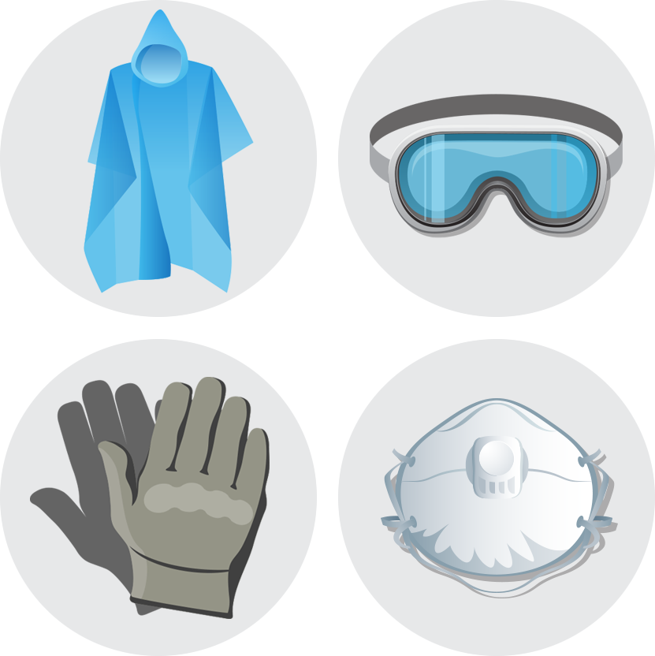

비옷
체온유지에는 무엇보다 젖지 않는 것이 중요합니다.
장갑
나뭇가지, 잔해, 그 외 거친 표면을 다룰 때 손에 상처를 입지 않도록 견고한 장갑을 구비합니다.
방진마스크 / 고글
붕괴 발생 지역의 열기와 먼지로부터 눈과 호흡 기관을 보호해야 합니다.
방사능 낙진에 대비해서는 1회용으로 사용하고 버릴 수 있도록 비옷, 방진마스크, 비닐장갑 여러 벌을 구비합니다.
비닐봉지
비닐봉지는 물, 음식, 폐기물을 담는 데 다양하게 쓰입니다. 젖은 바닥에 깔거나 간이 지붕을 만들 수도 있으므로 크고 작은 여러 종류를 갖추어 둡니다.
물티슈 / 손소독제 / 개인위생용품
음식이나 상처를 만지기 전, 용변과 폐기물을 처리한 후에는 반드시 손을 닦아야 합니다. 물이 부족하고 씻기 어려운 상황일수록 세균에 감염되지 않도록 위생에 각별히 유의합니다.
치약, 칫솔, 치실, 구강청결제 및 로션, 자외선 차단제 등 소량 포장된 위생용품을 구비하고 여성은 서바이벌 키트 안에 생리대도 넣어 두십시오.